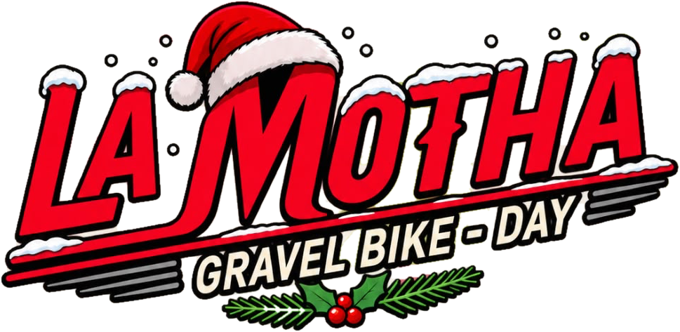
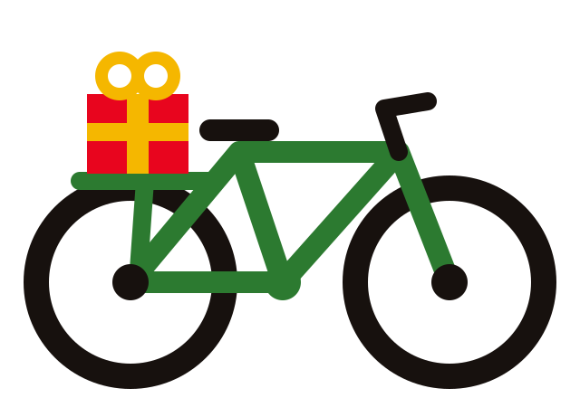
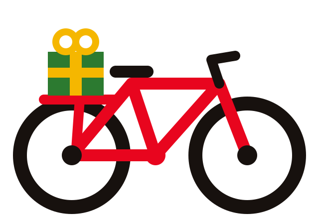
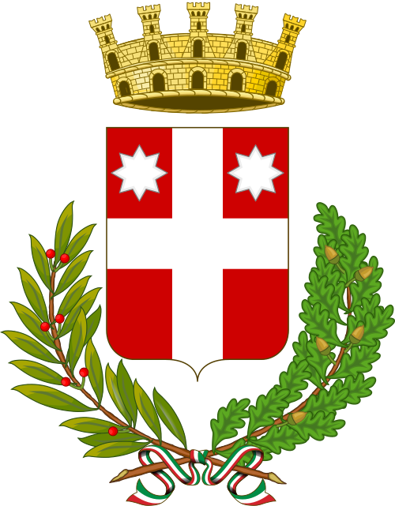
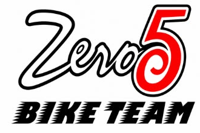

Christmas Edition
Domenica 13 dicembre



Città diMotta di
Livenza




Targhetta da bici 150×100 mm con 3 mm di abbondanza, ingrandita. Fondo crema e logo "La Motha" come la locandina chiara, "Christmas Edition" e il giorno in Archivo corsivo, le due bici col regalo, i loghi di organizzatori e collaboratori, la fascia di tessere in basso. Gli angoli in alto sono liberi per i fori delle fascette. PDF: stampa/Targhetta-GravelRide-15x10.pdf.